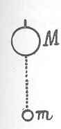
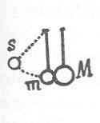

Kant: AA XIV, Physik und Chemie. , Seite 473 |
|||||||
Zeile:
|
Text:
|
|
|
||||
| 01 | Stoß condensabel ist, wiederspricht. Nehmen wir nun den kleinen Korper m, | ||||||
| 02 |  |
der in der Richtung mM den größeren an einem Faden hängenden | |||||
| 03 | M aufwerts stößt, so kan er (g auf ) diesen durch den Sto nicht | ||||||
| 04 | wirken, ohne ihn zusammen zu drücken (und selbst zusammen gedrückt | ||||||
| 05 | zu werden). Nun ist die Zusammendrückung eine Vertreibung | ||||||
| 06 | der Theile eines Theils der Materie (von beyden) aus dem | ||||||
| 07 | Raume, den sie vorher einnahmen und bedarf einer Zeit, so klein | ||||||
| 08 | diese auch seyn mag, folglich ist es in der That kein Stoß, sondern eine | ||||||
| 09 | Reihe unendlich vieler Drükungen diese Zeit hindurch. Wenn nun die | ||||||
| 10 | Drükung des Korpers m durch sein Gewicht (g jeden Augenblick ) größer | ||||||
| 11 | ist, als das Moment der Bewegung durch jene Drückungen (die den Stoß | ||||||
| 12 | ausmachen) in jedem Augenblicke (welches bey einem sehr großen Unterschiede | ||||||
| 13 | der Massen die Härte mag so groß seyn als sie wolle unausbleiblich | ||||||
| 14 | ist), so werden sie diese continuirlich durch das (g größere ) Gewicht des | ||||||
| 15 | Körpers M aufgehoben und dieser wird keines weges zum Steigen gebracht. | ||||||
| 16 | Ganz anders wird es ausfallen, wenn beyde Korper (wie man es in der | ||||||
| 17 | Collisions Maschine so einzurichten pflegt) an Fäden hängen, so, daß m, | ||||||
| 18 |  |
bis s gehoben, mit der durch den Fall im Bogen sm erworbenen | |||||
| 19 | Geschwindigkeit c den Korper M stößt. Denn da werden | ||||||
| 20 | beyde, ob sie gleich weiche Massen wären, nach dem | ||||||
| 21 | Stoße (der auch hier nur eine Summe von Drückungen eine | ||||||
| 22 | Zeit hindurch ist) sich mit der Geschwindigkeit mc/m+M bewegen, welches | ||||||
| 23 | unmöglich anders seyn kan, weil ohne das sonst eine Bewegung ohne | ||||||
| [ Seite 472 ] [ Seite 474 ] [ Inhaltsverzeichnis ] |
|||||||
;){kind=link}
;){kind=link}